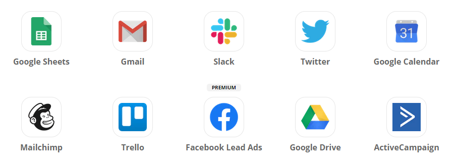

Effizienz ist in der heutigen Zeit von zentraler Bedeutung. Wenn möglich sollten herkömmliche Aufgaben automatisiert werden, um Zeit für die wichtigen Verantwortlichkeiten zu schaffen. Zapier wurde genau für diesen Zweck konzipiert. Oft hat man das Problem, dass es viele kleine "Insellösungen" gibt. Jedoch will man diese Lösungen an einem gewissen Punkt miteinander kombinieren oder bestimmte Aktionen abhänging von spezifischen Bedingungen auslösen. Zapier erlaubt es diverse Web Apps wie Gmail, Trello etc. miteinander zu kombinieren und völlig neuartige Lösungen daraus zu entickeln. Eine Übersicht über alle verfügbaren Apps kann hier gefunden werden.
Zapier beitet eine sehr einfache und verständliche Web-Oberfläche in welcher die verschiedenen Abläufe etc. konfiguriert werden können. Der gesamte Ablauf wird als einfaches Ablaufdiagramm konzipiert, was ungeachtet des technischen Hintergrundwissenswas für eine gute Übersicht und Verständlichkeit sorgt.
Diese verschiedenen Abläufe können auch mit einer Community geteilt werden. Dies hat den erheblichen Vorteil, dass es für ein grosses Spektrum von Anwendungsfällen bereits vordefinierte Lösungen gibt, welche leicht über die Web Oberfläche an die eigenen Bedürfnisse angepasst werden können. Ein paar Beispiele mit interessanten Anwendungsfällen in verschiedensten Bereichen wie dem Projektmanagement etc. sind hier verfügbar.
Dies hat in unseren Augen enormes Potenzial und sollte auch für unseren Use Case nicht ignoriert werden. In unserem Fall könnten zum Beispiel Dinge wie das automatische Versenden von E-Mails unter Abhängigkeit von bestimmten Voraussetzungen automatisiert werden. Dies ist wirklich eine tolle Innovation in unseren Augen und es hilft uns einer der wertvollsten Ressourcen zu sparen, nämlich Zeit.